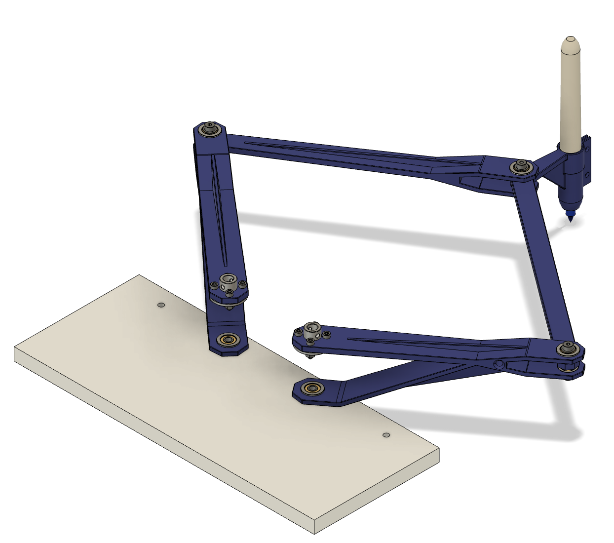
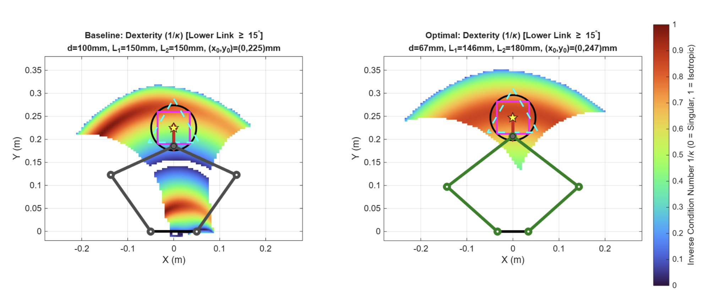
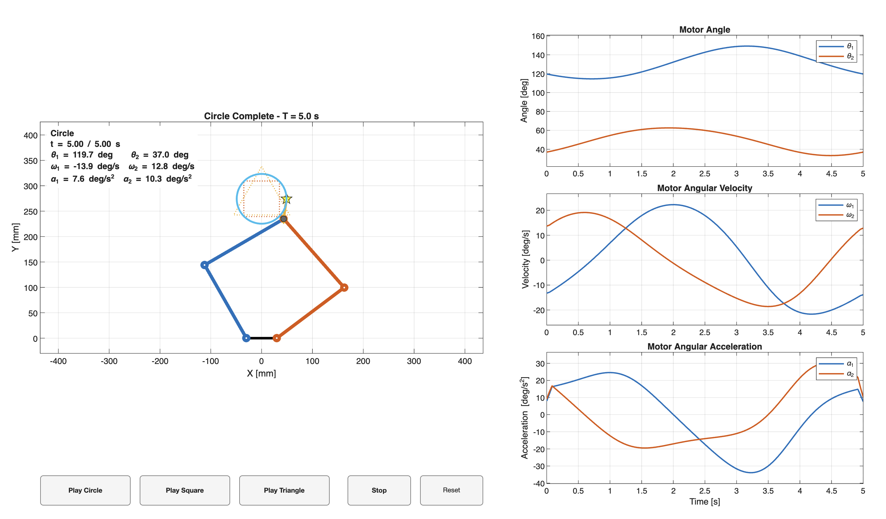
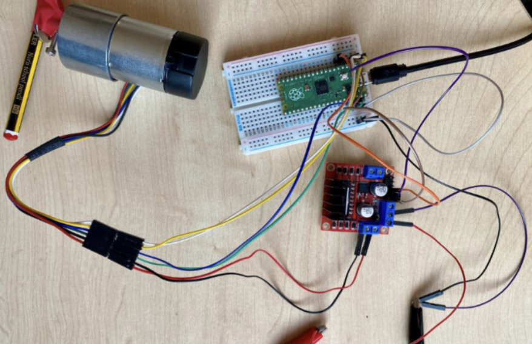

Robotics · Mechanical design · Simulation · Control
Multivariable Control for a Robotic arm
Designing a 5-bar linkage robotic arm to follow defined paths. Implemented Matlab simulation and tuning multivariable PID control to optimise speed and accuracy.
September 2026 – Present

Project overview
This project tasked a group of 3 with designing a robotic arm and pen attachment to draw shapes of specified sizes. The aim of this project is to minimise the time taken to draw whilst ensuring accuracy of shapes. The scope of this project covered mechanical design through CAD, simulation through Matlab / Simulink, multivariable and nonlinear control, and C to program an arduino and motor driver.
My contribution
Early on, my roles have been to lead the kinematic and dynamic simulations of the 5-bar linkage, while also being involved with the 3D printed linkage design before moving onto PID control as a group.
Engineering approach
- Define the intended task, and optimise linkage lengths for the given geometry.
- Simulate the kinematics and dynamics of the arms while CAD designing linkages.
- Translate the rquired motor angles and torques over time into an initial working P-controlled script for the motor.
- Redesign and tune PID control to optimise the accuracy and speed of the arm movement.
Results and scope
Ongoing...
Ongoing...
Project figures






Reports
Project report, drawings and supporting documentation will be linked here when available.